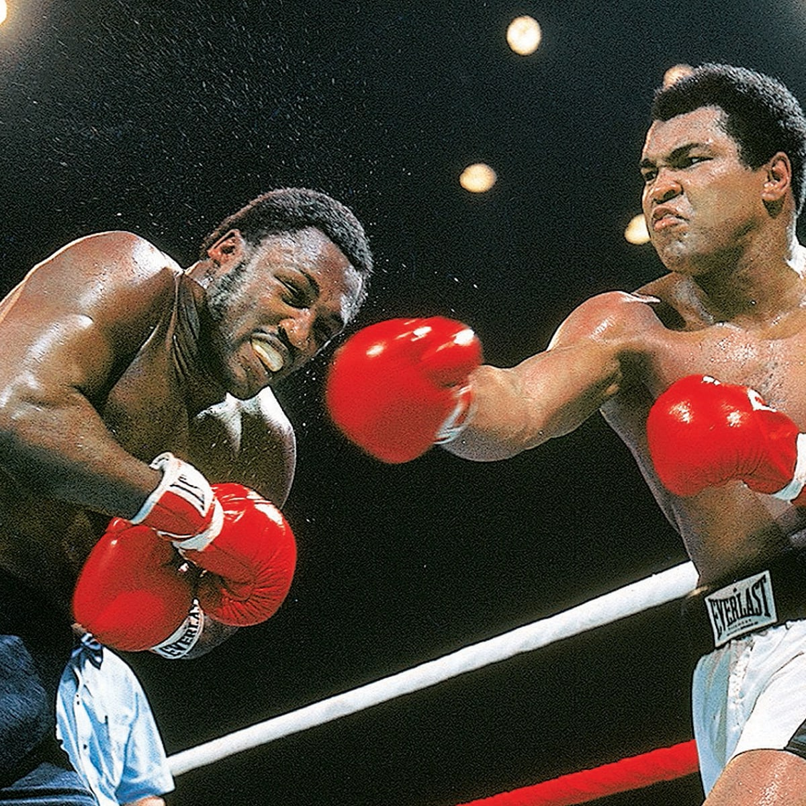

Fights

1. George Foreman (KO 8, Oct. 30, 1974)
For a guy who made a career of improbable wins, none exceeded the Rumble in the Jungle.
A decade after toppling Liston, a 32-year-old version of Ali met the next big thing—a 25-year-old George Foreman, who was 37-0 with 34 knockouts
He displayed his brilliance in the unlikely form of rope-a-dope passivity, then gradually took the offensive initiative as his wide-swinging challenger was reduced to performing on fumes.
And by the time Round 8 neared a close, Foreman was stumbling to the canvas and providing an image that'll live on long after anyone who saw it in real time is gone.
Neither Ali nor Frazier was in 1975 what he had been four years earlier.
But that didn't mean they couldn't get together to produce a classic—and, as it turned out, a trilogy finale that's become the measuring stick for all who have followed.
The Thrilla in Manila was a back-and-forth battle for the early going before Ali pulled away in the later stages and eventually forced Frazier's chief second, Eddie Futch, to surrender before Round 15.
But even in a win, he referred to it as the closest thing to death he'd ever experienced.
The legend had to begin somewhere, right?
In this case, it was when a brash, unproven 22-year-old kid stepped into the ring against a veteran slugger who'd won and defended the heavyweight title with consecutive one-round KOs of his predecessor.
It was little wonder, then, that Sonny Liston was a prohibitive favorite.
But after 18 minutes of ring action, the sport would never be the same.
Ali, in his last fight as Cassius Clay, confounded the slower Liston with improbably fast hands and feet and ultimately prompted his surrender—reportedly due to a balky shoulder—before Round 7.
It's not often a loss would make a 10-best list.
But it's not often a loss comes with the circumstances of Ali-Frazier I.
Taking into account that he'd fought fewer than 18 full rounds in the previous three-plus years, it's amazing enough that Ali lasted a full 15 with a prime and ferocious version of Smokin' Joe.
And even though Frazier dropped him with a hellacious left hand in the final round, Ali rose and took his medicine in the form of a unanimous-decision defeat that was the first of his career.
Other fights have passed it in terms of revenue and viewership, but this one still reigns as the pinnacle moment of the heavyweight division.
And even though he lost, it's not often that Ali surpassed the level he reached that night.
